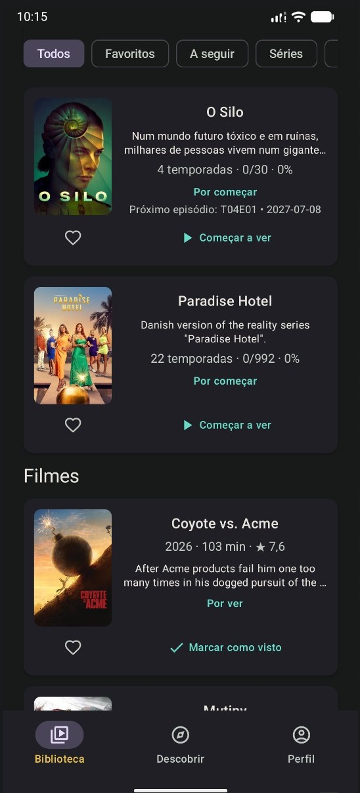
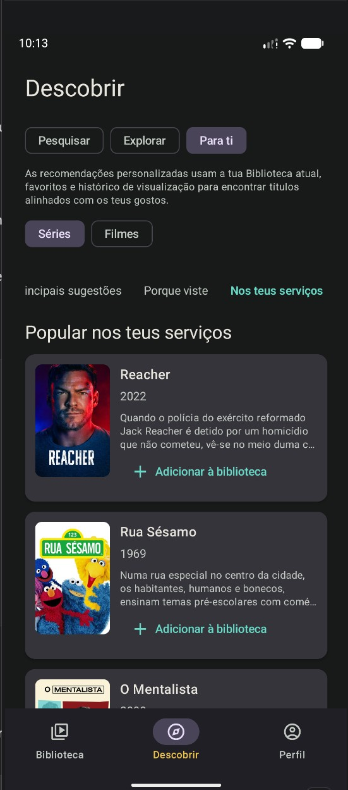
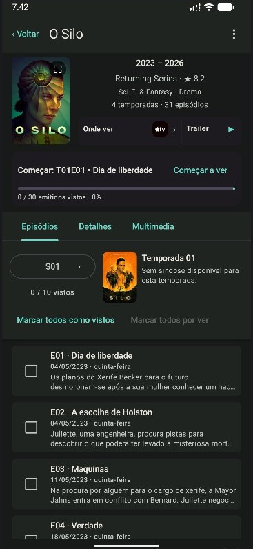
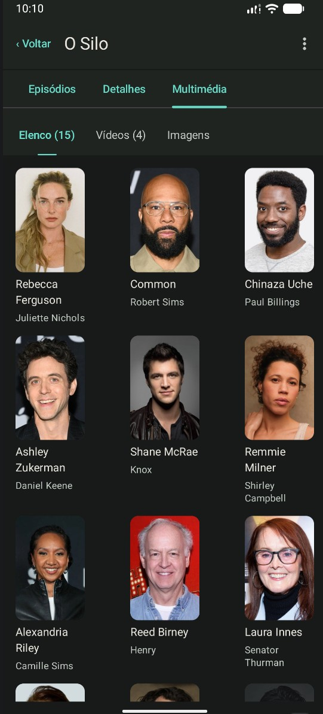

Episódios e progresso
Acompanha temporadas e episódios, navega entre episódios e sabe sempre o que vem a seguir.
UM NOVO CAPÍTULO
Acompanha o que vês. Sabe o que vem a seguir. Descobre algo novo. Explora as pessoas, imagens e histórias por detrás de tudo.
SERIES ORGANIZER REGRESSA
Series Organizer começou como uma forma simples de lembrar qual era o próximo episódio.
Series Organizer+ leva essa ideia muito mais longe: filmes e séries num só lugar, acompanhamento mais completo, descoberta, disponibilidade em streaming, elenco e multimédia, notificações e Cloud Backup opcional.
Raízes familiares. Uma visão muito maior.
A TUA BIBLIOTECA
Mantém filmes e séries juntos num só lugar, com acompanhamento pensado em torno do que estás realmente a ver.

DESCOBRIR
Pesquisa diretamente, explora o que é popular ou está a ser transmitido, afina os resultados com filtros detalhados ou explora recomendações com base na tua própria Biblioteca.

MAIS DO QUE ACOMPANHAR
O teu progresso é apenas parte da história.
Acompanha temporadas e episódios, navega entre episódios e sabe sempre o que vem a seguir.
Explora atores, títulos Known For, biografias e créditos de cinema ou televisão.
Explora posters, fundos, logótipos e vídeos, com visualização em ecrã inteiro e gravação de imagens.
Vê a disponibilidade de streaming e compra para a região selecionada.
Series Organizer+ está em desenvolvimento ativo. Ainda virão mais ideias, mais plataformas e formas mais completas de organizar o que vês.
VAI MAIS FUNDO

Acompanhamento, episódios, serviços, trailers, elenco, vídeos e imagens mantêm-se ligados ao título que estás a ver.

Passa naturalmente de uma série para o respetivo elenco e daí para outros títulos sem perderes o teu lugar.
OS TEUS DADOS
A tua Biblioteca vive no teu dispositivo e continua disponível mesmo quando não tens sessão iniciada ou estás offline.
O início de sessão opcional com Google permite criar Cloud Backups manuais da tua Biblioteca e dos dados de acompanhamento, prontos a restaurar quando precisares.
Cloud Backup v1 é manual. Iniciar sessão não envia automaticamente a tua Biblioteca e o Cloud Backup não substitui silenciosamente os teus dados locais.
A HISTÓRIA DO SERIES ORGANIZER
Muito antes do Series Organizer+, o problema era maravilhosamente simples: a lista de séries não parava de crescer e lembrar a última temporada e episódio vistos tornava-se cada vez mais difícil.
A primeira solução era pouco mais do que TVShows.txt. Depois esse ficheiro de texto transformou-se numa aplicação. E essa aplicação continuou a crescer.
O primeiro Series Organizer era intencionalmente simples: séries, temporadas, episódios e uma forma de lembrar onde tinhas parado.
Não era bonito. Não precisava de ser. Resolvia o problema.

A segunda geração foi além das origens semelhantes a uma folha de cálculo. Uma verdadeira barra de ferramentas, controlos visuais, temas e mais opções começaram a definir a personalidade da aplicação.

Series Organizer começou a obter informação mais rica: episódios, datas de emissão, descrições, imagens e metadados online.
Já não se tratava apenas de lembrar um número. O acompanhamento estava a tornar-se num lugar para explorar as próprias séries.

Superfícies escuras, imagens, atores, informação de episódios e destaques laranja passaram a fazer parte da identidade do Series Organizer.
O projeto tinha crescido de um simples acompanhamento para um companheiro de desktop muito mais completo para televisão.

Series Organizer 5 reuniu acompanhamento, imagens, informação de elenco, ferramentas de descoberta, RSS, legendas e anos de experimentação.
Depois o desenvolvimento parou.
A ideia não.

Anos mais tarde, Series Organizer regressa — reconstruído de raiz para filmes e TV, plataformas modernas e uma visão muito maior.
DESENVOLVIMENTO ATIVO
Series Organizer+ ainda não está terminado. A aplicação está a ser usada, testada, alterada e refinada à medida que o desenvolvimento continua.